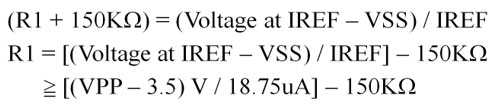
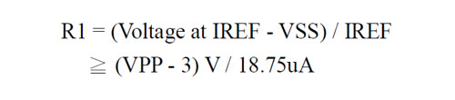
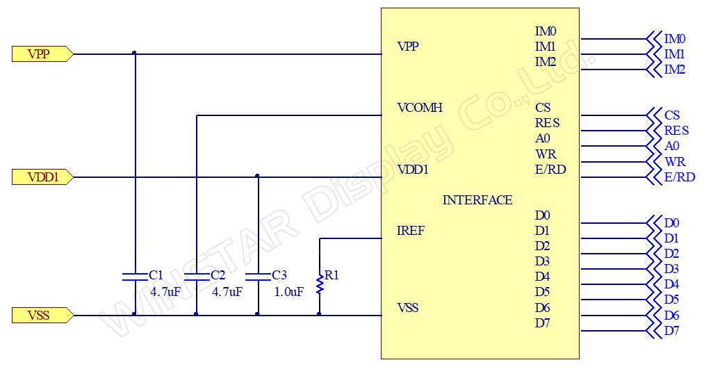
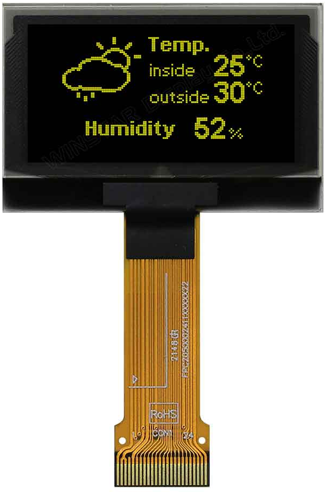

Если нужно заменить экран на Digitakt 1 или Digitakt 2, то следует знать следующую вещь: экраны от Digitakt 1 и Digitakt 2 не совместимы друг с другом. Они не взаимозаменяемые! Если установить желтый экран от Digitakt 1 на Digitakt 2, то хотя они и будут совместимы по пинам, желтый экран на Digitakt 2 будет работать некорректно: он будет сильно мерцать, по сути глазом будет видна строчная развертка, а так же отрисовка может сдвигаться на 2-3 пикселя, и эти пиксели переносятся на противоположную сторону экрана.
Известно только, что желтый экран от Digitakt 1 без проблем работает на Electron Syntakt (у Syntakt нет версии Syntakt 2, есть только первая и единственная), а так же на Electron Analog Heat 2 (он же Analog Heat MKII).
Геометрия
У Digitakt 1 и Digitakt 2 экран имеет 20 контактов на текстолите, к которому прикреплен дисплей. На следующем фото представлен желтый экран от Digitakt 1, который установлен на Digitakt 2 (видно, что дисплей не дает нормальную картинку):
Сама матрица заключена в черную железную рамку. От матрицы к текстолиту идет шлейф на 24 контакта.
Производитель
По всей видимости, поставщиком дисплеев является тайваньская компания WinStar: https://www.winstar.com.tw
Была информация, что дисплеи производятся еще и в Польше, но возможно там происходит только сборка матрицы и корпуса.
Модели
Для Digitakt 1, по всей видимости, использовались дисплеи с модулем CH1116 IC. Этот модуль производился до декабря 2023 года. Затем компания WinStar решила выпустить преемника этого модуля, который называется SH1106 IC.
Вот что на что заменяется:
Существующие vs. Новые номера моделей IC
|
Related Module Series | |
|
Past model (CH1116) |
New model (SH1106) |
|
WEO012864AE |
WEO012864AH |
|
WEO012864AJ |
WEO012864AL |
|
WEO012864AK |
WEO012864AM |
Данные модели имеют одинаковую распиновку, но у серии SH1106 между ножками VSS и IREF должно включаться более высокое сопротивление. Он него зависит номинальная яркость дисплея.
CH1116:

SH1106:

Схема интерфейса обеих модулей показана на следующем рисунке:

Большинство команд для CH1116 и SH1106 совместимы, но все же есть некоторые различия. Например, каждая микросхема имеет эксклюзивные функции, и только соответствующая микросхема может использовать эти команды. Кроме того, хотя некоторые команды выполняют одну и ту же функцию, их параметры могут быть несовместимы.
Отличия в командах приведены в следующей таблице:
|
Item |
CH1116 |
SH1106 |
|
Set Breathing Light |
Set Breathing Light ON/OFF, Brightness Adjust and Time Interval. |
N/A |
|
Additional Horizontal Scroll Setup Mode Set |
Set up the horizontal scroll parameters. |
N/A |
|
Continuous Horizontal Scroll Setup |
Set up the horizontal scroll parameters. |
N/A |
|
Set Scroll Mode |
Control continuous or single screen scroll. |
N/A |
|
Set Deactivate /Activate Horizontal Scroll |
Stop or start motion of horizontal scrolling. |
N/A |
|
Set Pump voltage value |
Specifies output voltage (VPP) of the internal charger pump. |
Specifies output voltage (VPP) of the internal charger pump. |
|
IREF Resistor Set |
IREF can be controlled by external resister or internal resister. |
N/A |
|
Set Display Clock Divide |
Dicide Ratio: 8, 16, 3, 4 |
Dicide Ratio: 1~16 |
|
Set Adaptive Power Save |
D6H: Normal |
N/A |
|
Set Pre-charge Period |
Pre-charge: 0 DCLKs ~ 45 DCLKs |
Pre-charge: 1 DCLKs ~ 15 DCLKs |
|
Set row non-overlap/SEG Hiz Period |
This command is used to set the duration of the row non-overlap /SEG Hiz Period period. |
N/A |
Итого по отличиям:
1. CH1116 может использовать внешний или внутренний резистор (82h), но SH1106 не имеет этой функции.
2. Для CH1116 и SH1106 команда (D5h), используемая для управления частотой отображения, одинакова, но настройки параметров различаются.
Все подробности есть на странице производителя: https://www.winstar.com.tw/replacing-ch1116-with-sh1106.html
Внешний вид
Ссылка на страницу с моделью WEO012864AE на более старом CH1116:
https://www.winstar.com.tw/products/oled-module/graphic-oled-display/weo012864ae.html
